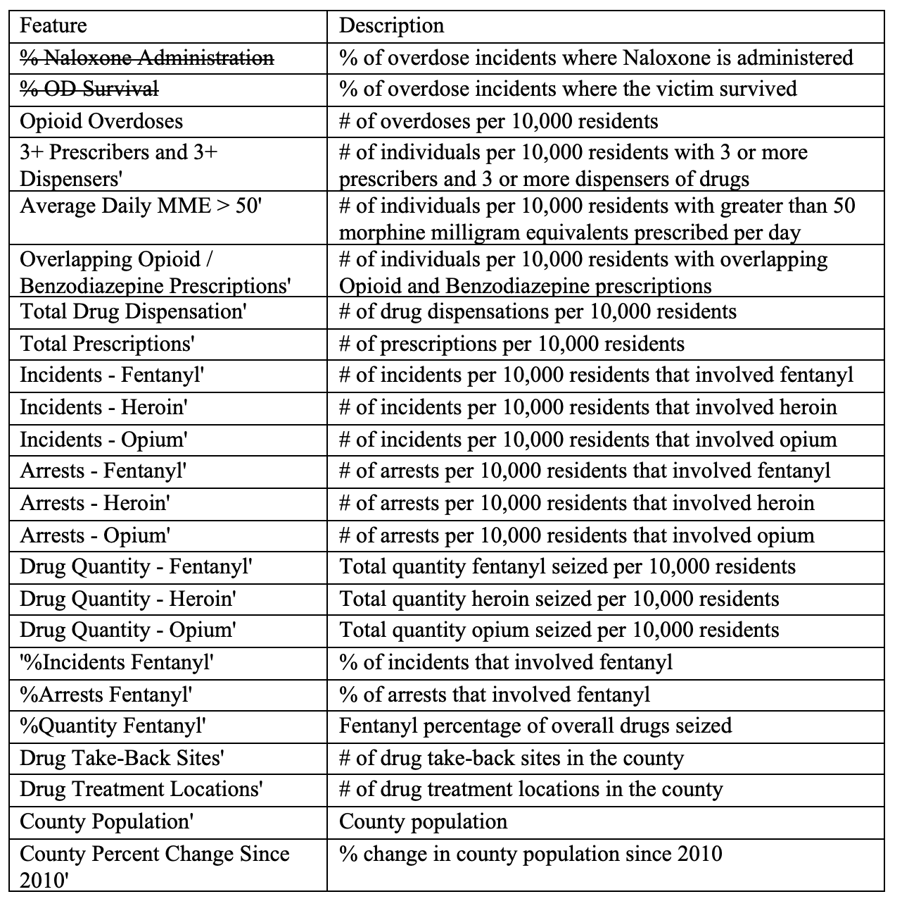

Cluster analysis is an unsupervised machine-learning approach. In the context of this project, we attempted to create meaningful clusters of counties that could be used to (1) provide an informative description of the opioid epidemic as it pertains to Pennsylvania counties and (2) to provide a potentially valuable feature for the classification models for opioid survival or Naloxone administration.
Dataset
We performed cluster analysis on our county characteristics dataset. This dataset provides demographic and opioid related features at the county-level.

Fig.1 - Features Explanation
Pseudo-code
DBScan
Loop over each unvisited instance in the dataset:
Mark the instance as visited
Find all neighbors for the instance within a specified distance (eps)
If # of neighbors is greater than or equal to the specified min # neighbors:
Create new cluster C
ExpandCluster(P, neighbors, C)
ExpandCluster(P, neighbors, C):
Add point P to cluster C
Loop over each point in neighbors:
Mark the point as visited
Find all neighbors’ for the instance within a specified distance (eps)
If # of neighbors’ is greater than or equal to the specified min # neighbors -> Join neighbors’ with neighbors
If the point is not yet a member of any cluster -> Add the point to cluster C
KMeans
Create n singleton clusters (where each point is a cluster)
Loop through following steps until centroid shift is less than some threshold:
Assign each sample to the nearest centroid
Create new centroids by computing the mean value of the points assigned to each centroid.
Agglomerative Clustering
Loop through following steps until centroid shift is less than some threshold:
While the number of clusters is greater than some pre-specified number n:
Combine the two closest clusters into a single cluster -->